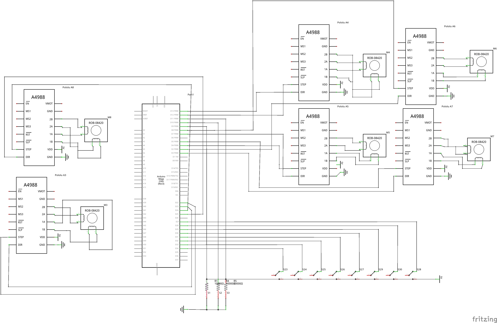
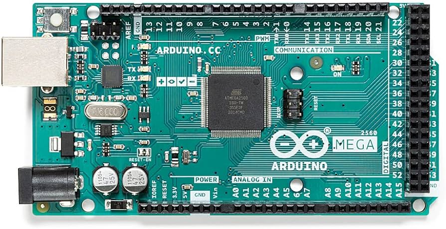

Design
Our project is all about building a Jenga stacker that can do three key things: 1) position Jenga pieces individually, 2) organize them into groups of three, and 3) stack these groups into a tower. There are four defined quadrants in this design. All the mechanisms are entirely mirrored along the diagonal as the orientation of the jenga layers switches each time. To begin, the jenga pieces are placed in the Placement Quadrant and the Straight Pushers will either push the piece into the Horizontal or Vertical Layer Quadrants. Once three jenga pieces are stored in either the Layer Quadrants, the finished layer is pushed into the Elevator Cavity by the L-shaped Pushers. The L-shaped Pushers will make a second pass to ensure proper alignment of pieces in the Elevator Cavity. The elevator lowers to allow the next layer to be added. In this way a full jenga stack is built from the top layer every time in simple repeatable actions.
Mechanical
Stacker
There are four belt-pulley systems that translate stepper motor rotational motion into linear motion. These belts control the movement of the pushers.
Major design decisions were dictated by the following metrics:
Controlled precision
Low tolerances
Robust design
The positioning and tolerance is highly precise. Additionally for the priority of precision we opted to take our measurements in metric units. The first critical design constraints were the jenga pieces themselves. A one by three layer was measured to be 7.5cm by 7.5cm. A major design decision early on was that the elevator cavity had to retain the jenga stack while minimizing inconsistencies and movement. The length of the belt assembly determined the travel distance of the pusher. One big challenge was to create enough travel distance while still maintaining tight tolerances. Much of this was accomplished by constant reiteration of various parts to better optimize the given space.
Another challenge we discovered early on was that while belts and pulleys could be precise in their controlled movement, they were unable to withstand the weight and torque necessary to fulfill the needs of the attached pusher. Taking inspiration from 3D printers, we discovered that belts were bolstered with supports going along the belt length. Simple wooden dowels were used for this additional support. 3D printed dowel holders keep the pusher from wobbling.The final dowel holders went through a few iterations. Not only did the position of the dowels shift to being next to each other for better lateral support, we added limit switches to detect when a pusher has reached a specific end of its travel.
To prevent the elevator lead screws from wobbling at the top we created a plate to hold the top of the screw. This plate also had a custom made bushing to allow free rotation of the screw.
Pushers
There are two types of pushers. A straight pusher and an L-shaped pusher. The straight pusher is
responsible for pushing the individual jenga peices into the Layer Quadrants. The L-Shaped
pushers are responsible for pushing the jenga layer into the elevator and aligning the layer
properly.
These 3D printed parts are split into two parts. The top 'pushing' part and the bottom belt
attachment.
These are attached with a simple screw and popsicle sticks to bolster the rigidity of the
pushers. Additional popsicle sticks were added to aid with better contact of the jenga pieces.
Structure
Major design decisions were dictated by the following metrics:
clearance
Ease of assembly
Stable support
Supporting the top layer is the main body of the structure, which consists of four outer walls and several inner walls for support. The outer walls are made out of laser cut 0.25” hardwood and connected via teeth on the outer edges. The inner walls were connected using a slot joint, and a few minor walls for support were also added around the elevator with teeth. The floor and roof platforms have the same dimensions and same outer holes for the teeth to fit into to secure the entire structure.
Elevator
The entire elevator system fits into the quadrant of the structure opposite of where the Jenga blocks are initially placed. The system uses two stepper motors with lead screws attached to them, and a wooden platform that travels up and down the lead screws which also carries the Jenga blocks down with it. This platform can be pulled out of and put back into the elevator so that the Jenga game can be played by the user(s).
Electrical
We are using 6 stepper motors to control the Jenga stacker. For the pushers on the top, we are using 4 Nema17 12V stepper motors as they are advantageous for speed control, positioning precision, movement repeatability, and reliability. They are being run by the CNC shield that has A4988 drivers connected to it. Limit switches on each side of the pusher path that help the motors to know when to stop. In the elevator, we are using 2 Lead screw Nema17 12V stepper motors as they have high torque and can handle the full weight of the Jenga tower. They are being run by a stepper driver which has A4988 drivers connected to it. We are using a 12V 5A Power Supply to run the motors and the Arduino.
Firmware and Software
We initially started by using an Arduino Uno and an Adafruit Motor Shield V2 to run the stepper motor, due to the limitation of the shield and board we shifted to a CNC shield using an Arduino Mega. The mega allowed us to connect the limit switches and 2 additional stepper motors for the elevator. The limit switches are being used to track the path of the pushers, it helps to tell the pushers when to stop. Three pushbuttons are being used, we are using the ezButton library which helps to reduce the debouncing of the buttons.
Our code has a separate function to run each motor, the system keeps track of the number of blocks being pushed using the limit switch and push buttons. Once there are three blocks the mechanism to stack a layer is initiated, and the pushers stack 3 jenga pieces onto the elevator which moves the Jenga Tower 1 layer down, and the process is repeated. 